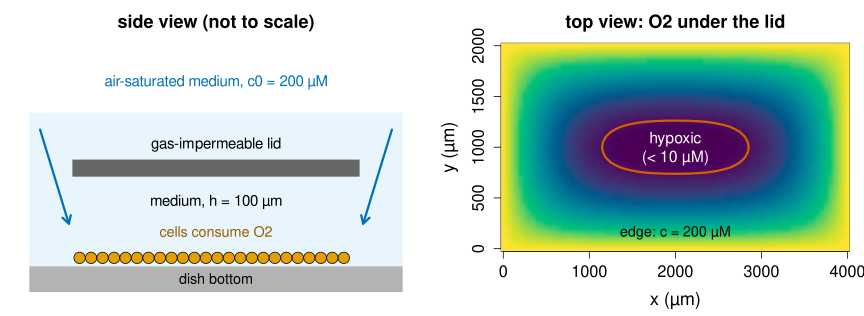
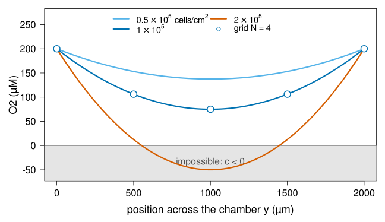
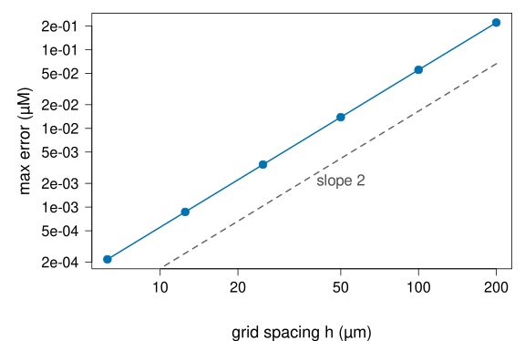
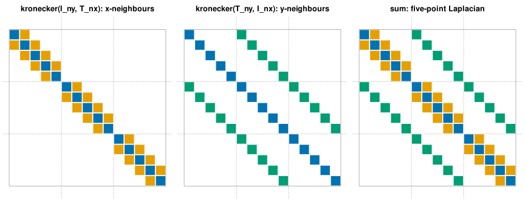
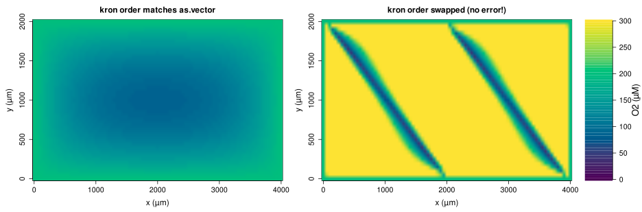
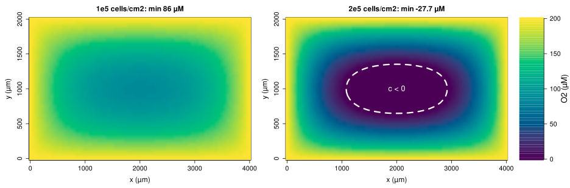
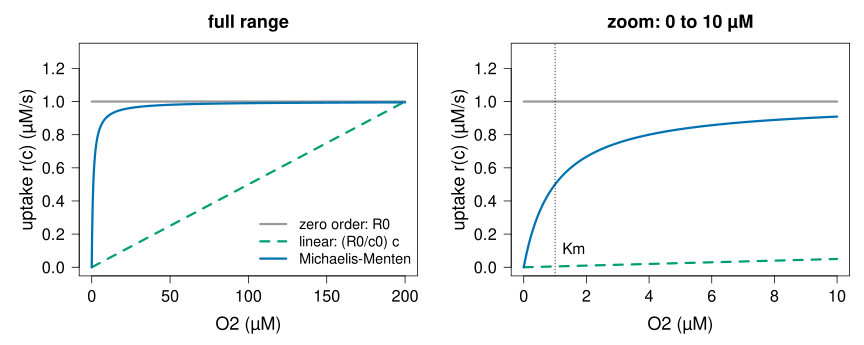
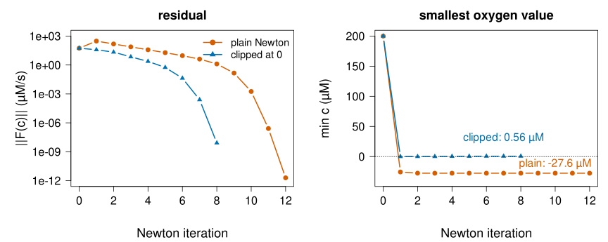

Part 10 — Diffusion and heat: finite-difference PDEs
Numerical analysis for biologists
About this lecture
The last two units followed a concentration in time until it settled. Often only the settled state matters: where does the oxygen end up once supply and consumption balance? Then time drops out, and what is left is one large linear (or nonlinear) system.
Steady diffusion with sources and sinks is a boundary value problem: D\,\nabla^2 c = r(c) (Poisson; Laplace if r = 0). No initial condition, only boundary conditions.
1D first: the (-1, 2, -1) stencil gives a tridiagonal system, solved in O(n).
2D: the five-point Laplacian, assembled from 1D pieces with Kronecker products, and solved with a sparse direct solver.
Numbering the grid: R is column-major, numpy row-major. Get the order wrong and the answer is wrong, with no error message.
Nonlinear uptake (Michaelis–Menten): Newton, with Jacobian = Laplacian + a diagonal.
Biology: oxygen under a lid over a cell layer. Where do the cells go hypoxic, and at what cell density?
Biology: oxygen under a lid

Cells on the floor of a chamber with a gas-impermeable lid. Oxygen enters only from the open edges and diffuses inwards; every cell on the way consumes some [O1].
Question: where do the cells go hypoxic, and how does that depend on cell density?
The model and its numbers
Depth-averaged over the 100 µm gap: oxygen c(x, y) in µM obeys, at steady state,
D\left(\frac{\partial^2 c}{\partial x^2} + \frac{\partial^2 c}{\partial y^2}\right) = r(c), \qquad c = c_0 \text{ on the edges.}
quantity
value
status
D (O₂ in water, 37 °C)
2\times10^{-9} m²/s = 2000 µm²/s
standard value
c_0 (air-saturated medium)
200 µM
standard value
consumption per cell
50 amol/s (10–100 is typical)
order-of-magnitude assumption
cell density \rho
10^5 cells/cm² (about confluent)
varied, 0.25–4 × 10^5
R_0 = per cell × \rho / gap
0.5 µM/s at 10^5 cells/cm²
derived
Recap: three tools you already have
Second difference (The diffusion (heat) equation by finite differences)
2D grid: some fill-in is unavoidable; a good ordering helps.
Newton (Newton for systems of equations)
J(\mathbf c)\,\boldsymbol\delta = -\mathbf F(\mathbf c), \quad \mathbf c \leftarrow \mathbf c + \boldsymbol\delta
quadratic convergence near a root; may find the wrong root.
Steady state = a boundary value problem
Set \partial c/\partial t = 0 in the diffusion equation with uptake:
\underbrace{\frac{\partial c}{\partial t}}_{=\,0} = D\,\nabla^2 c - r(c) \quad\Longrightarrow\quad D\,\nabla^2 c = r(c), \qquad \nabla^2 c = \frac{\partial^2 c}{\partial x^2} + \frac{\partial^2 c}{\partial y^2}
Poisson equation when r does not depend on c; Laplace equation when r = 0.
No initial condition. The boundary conditions alone fix the answer: fixed value (open edge) or no flux (wall).
Could we just time-step until nothing changes? Explicit 2D with h = 50 µm needs \Delta t \le h^2/(4D) = 0.31 s, and settling takes \sim L^2/D: thousands of steps, 16\times more at h/2. A steady-state solve is one linear system.
1D first: one line across the chamber
A long chamber: only y matters. Grid y_i = i\,h, i = 0, \dots, N, with c_0 = c_N = 200 µM known. At each interior point:
library(Matrix)lap1 <-function(n) bandSparse(n, k =-1:1, # tridiag(-1, 2, -1)diagonals =list(rep(-1, n -1), rep(2, n), rep(-1, n -1)))D <-2000; c0 <-200; R0 <-0.5# µm^2/s, µM, µM/sL <-2000; N <-4; h <- L / N; n <- N -1A1 <- D / h^2*lap1(n)b1 <-rep(-R0, n); b1[c(1, n)] <- b1[c(1, n)] + D / h^2* c0as.vector(solve(A1, b1))# [1] 106.25 75.00 106.25y <- h * (1:n); c0 - R0 * y * (L - y) / (2* D) # exact parabola# [1] 106.25 75.00 106.25
Exact to the last digit, even with 3 points: the second difference is exact for parabolas, and constant uptake gives a parabola.
bandSparse + solve: the sparse solver finds the band itself (O(n), as Thomas).
Failure: oxygen below zero

Double the density (R_0 = 1 µM/s): \mathbf c = (12.5,\ -50,\ 12.5). The solver is right; the model is wrong. Cells cannot consume oxygen that is not there.
Check:min(c) >= 0 for every concentration. Constant uptake is only valid while c stays well above zero.
Check a solver: exact solution and refinement

Test problem with a non-polynomial solution: linear uptaker = k\,c, k = R_0/c_0 = 0.0025 /s:
Each equation links a point (red) to its four neighbours (orange). Neighbours on the edge (blue) are known.
One vector from a grid
A solver wants a vector \mathbf c of length n_x n_y. Number the points row of the grid by row, x running fastest:
k = i + (j - 1)\,n_x \qquad (i = 1..n_x,\ j = 1..n_y)
In the toy grid (n_x = 5): point (3, 2) is k = 8. Its neighbours: k \pm 1 = 7, 9 in x, and k \pm n_x = 3, 13 in y.
In R this is exactly what as.vector(C) does to a matrix C[i, j] with nx rows: R stores matrices column by column (column-major), so the first index runs fastest.
So: keep the field as an n_x \times n_y matrix C[i, j]= c(x_i, y_j), and convert with as.vector(C) and matrix(cvec, nx, ny).
The matrix has blocks

x-neighbours: the 1D matrix T_{n_x} repeated along the diagonal, one block per y-row (orange).
y-neighbours: -1 at distance n_x from the diagonal (green). The diagonal (blue) gets 2 + 2 = 4.
Kronecker products
A \otimes B: replace each entry a_{pq} of A by the block a_{pq} B. Size: (m_A m_B) \times (n_A n_B).
I_{n_y} \otimes T_{n_x}: the x-blocks (left panel). T_{n_y} \otimes I_{n_x}: each entry of T_{n_y} becomes a multiple of I_{n_x}, so the -1s sit n_x apart (middle panel).
With x running fastest: \;A = \dfrac{D}{h^2}\bigl(I_{n_y} \otimes T_{n_x} + T_{n_y} \otimes I_{n_x}\bigr).
Assembling the 2D matrix in R
Lx <-4000; Ly <-2000; h <-50# chamber and grid, µmnx <- Lx / h -1; ny <- Ly / h -1# 79 x 39 interior pointsA <- D / h^2* (kronecker(Diagonal(ny), lap1(nx)) +# x-neighbourskronecker(lap1(ny), Diagonal(nx))) # y-neighboursdim(A)# [1] 3081 3081nnzero(A) # about 5 per row# [1] 15169isSymmetric(A)# [1] TRUE
Dense, this matrix would hold 9.5 million entries (76 MB); 99.8 % are zero.
Diagonal is the sparse identity. Never build the dense one at this size.
The edges go into the right-hand side
B <-matrix(0, nx, ny) # B[i, j] belongs to point (x_i, y_j)B[1, ] <- B[1, ] + c0; B[nx, ] <- B[nx, ] + c0 # left, right edgeB[, 1] <- B[, 1] + c0; B[, ny] <- B[, ny] + c0 # bottom, top edgeb <- D / h^2*as.vector(B) # stacks columns: x runs fastestR0 <-0.5# 1e5 cells/cm^2C <-matrix(as.vector(solve(A, b - R0)), nx, ny)range(C)# [1] 86.14604 198.58301which(C ==min(C), arr.ind =TRUE) # the centre: x = 2000, y = 1000 µm# row col# [1,] 40 20
A corner point has two known neighbours, so it gets c_0 twice.
Sources and sinks enter the same way: subtract the uptake (or add the production) in \mathbf b, point by point.
Check the assembly with a known field
x <- h * (1:nx); y <- h * (1:ny)U <-outer(sin(pi * x / Lx), sin(pi * y / Ly)) # 0 on all four edgesAU <- D * pi^2* (1/ Lx^2+1/ Ly^2) * U # exact -D * Laplacianmax(abs(as.vector(A %*%as.vector(U)) -as.vector(AU))) /max(AU)# [1] 0.0004368497
Small and O(h^2): the matrix applies the Laplacian correctly. With the Kronecker factors in the wrong order the same check gives 253.9.
Use a field that differs in x and y, on a grid with n_x \ne n_y. A square grid and a symmetric test field hide orientation bugs.
Pitfall: column-major vs row-major

flatten C (shape n_x \times n_y)
runs fastest
matching matrix
R
as.vector(C) (column-major)
i (x)
I_{n_y} \otimes T_{n_x} + T_{n_y} \otimes I_{n_x}
numpy
C.ravel() (row-major, default)
j (y)
T_{n_x} \otimes I_{n_y} + I_{n_x} \otimes T_{n_y}
numpy
C.ravel(order="F")
i (x)
same as R
Sparse direct solve
solve(A, b) on a sparse matrix: sparse LU. Tell it the matrix is symmetric (forceSymmetric(A)) and it uses sparse Cholesky (CHOLMOD) with a fill-reducing ordering.
2D grid, natural order: the band of width n_x fills in. Cholesky factor of the chamber matrix:
h (µm)
unknowns
nnz(A)
nnz(L), natural
nnz(L), reordered
50
3 081
15 169
240 317
43 825
25
12 561
62 329
1 984 637
257 722
12.5
50 721
252 649
16 129 277
1 475 954
At h = 12.5 µm one solve took ~3 s as general LU, 0.16 s with forceSymmetric.
Python: scipy.sparse.linalg.spsolve. Rust: sprs has no direct solver; the exercise uses a hand-written conjugate gradient.
Oxygen under the lid: constant uptake

10^5 cells/cm²: lowest oxygen 86 µM in the centre. Well oxygenated.
2\times10^5 cells/cm²: centre at −27.7 µM. The 1D model said −50: the short edges help a little, but constant uptake is again impossible.
Three uptake models

Zero orderr = R_0: linear system, but c < 0 possible. Linearr = k c: linear system, but wrong at high c (here 18× too low at 10 µM).
Michaelis–Mentenr = R_0\,\dfrac{c}{K_m + c}, K_m \approx 1 µM: full rate until oxygen is almost gone, then shuts off. Realistic, but nonlinear.
Michaelis–Menten uptake: Newton
\mathbf F(\mathbf c) = A\mathbf c + r(\mathbf c) - \mathbf b = \mathbf 0, with r applied point by point. Its Jacobian:
J(\mathbf c) = A + \operatorname{diag}\bigl(r'(c_k)\bigr), \qquad r'(c) = \frac{R_0 K_m}{(K_m + c)^2}.
Km <-1; R0 <-1# 2e5 cells/cm^2uptake <-function(c) R0 * c / (Km + c) # µM/sduptake <-function(c) R0 * Km / (Km + c)^2cv <-rep(c0, nx * ny) # start: air-saturatedfor (it in1:30) { F <-as.vector(A %*% cv) +uptake(cv) - b # residual, µM/sif (sqrt(sum(F^2)) <1e-8) break J <- A +Diagonal(x =duptake(cv)) # sparse, same pattern as A cv <- cv +as.vector(solve(J, -F))}
Failure: a confident wrong answer

Plain Newton converges, quadratically, after 12 steps, to \min c = -27.6 µM.
That is a root of \mathbf F: for c < -K_m, c/(K_m + c) > 0, so “negative oxygen” is still consumed.
Step 1 jumps far below 0 (it is the constant-uptake solve), and Newton settles on the spurious root.
min c settles quickly (changes shrink ~4× per halving, second order).
The hypoxic area converges slowly: it counts grid points below a threshold, which is only first order. Report it as “about 10 %”.
Newton needs about the same number of steps on every grid.
Before you trust a steady-state solve
Assembly: apply A to a manufactured field on a grid with n_x \ne n_y; error should be O(h^2).
Ordering: one numbering everywhere (matrix, \mathbf b, reshaping, plotting). Plot the field: stripes or values outside the boundary range mean an index bug.
Physics: no value below the smallest or above the largest boundary value without a source to explain it; min(c) >= 0.
Residual and root: \|A\mathbf c + r(\mathbf c) - \mathbf b\| small and the root is physical.
Grid refinement: halve h; changes shrink ~4×.
Model: is constant / linear / saturating uptake right for the concentrations that occur? Which numbers are assumptions?
Summary
Steady diffusion with uptake is a boundary value problem, D\nabla^2 c = r(c): Poisson/Laplace. Only boundary conditions, no time steps; one (sparse) system.
1D: tridiagonal, O(n). 2D: the five-point Laplacian, A = \frac{D}{h^2}\bigl(I_{n_y}\otimes T_{n_x} + T_{n_y}\otimes I_{n_x}\bigr) with x running fastest; edges go into \mathbf b.
Numbering: R as.vector is column-major, numpy ravel row-major. The Kronecker order must match; test on a rectangle with a manufactured field.
Sparse direct solve with a fill-reducing ordering (forceSymmetric + solve, spsolve). In 2D the band fills in; reordering saves 5–10×.
Michaelis–Menten uptake: Newton, J = A + \operatorname{diag}(r'), same sparsity. It can converge to a negative “root”: clip and check min(c) >= 0.
Oxygen under a lid: hypoxic core above about 1.75\times10^5 cells/cm² in our (assumed) setting.
Next:Flow plus diffusion: what changes when the medium moves.